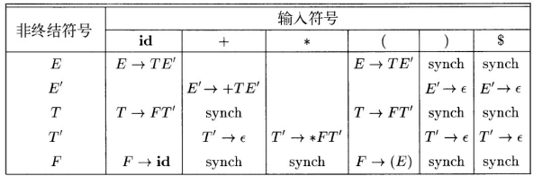

语法分析｜自顶向下的语法分析
自顶向下的语法分析
-
自顶向下语法分析可以被看作是为输入串构造语法分析树的问题
- 它从语法分析树的
根节点开始，按照先根次序创建这颗语法分析树的各个节点 - 自顶向下语法分析也可以被看作是寻找输入串的
最左推导的过程
- 它从语法分析树的
-
在一个自顶向下语法分析的每一步中，关键问题是对一个非终结符号应用哪个产生式
- 一旦选择了某个 A 产生式，语法分析过程的其余部分负责将相应产生式体中的终结符号和输入相匹配
递归下降的语法分析
Recursive-Descent Parsing (uses Backtracking)
- 一个递归下降语法分析程序由一组过程组成，每个非终结符号有一个对应的过程
- 程序的执行从开始符号对应的过程开始，如果这个过程的过程体
扫描了整个输入串，它就停止执行并宣布语法分析成功完成 - 通用的递归下降分析技术可能需要回溯。也就是说，它可能需要重复扫描输入
- 程序的执行从开始符号对应的过程开始，如果这个过程的过程体
FIRST 和 FOLLOW
- 在自顶向下语法分析过程中，FIRST 和 FELLOW 使得我们可以根据下一个输入符号来选择应用哪个产生式
- 在恐慌模式的错误恢复中，由 FOLLOW 产生的词法单元集合可以作为同步词法单元
- FIRST() 被定义为可从 推导得到的串的首符号的集合
- 其中 是任意的文法符号串
- 如果 那么 也在 FIRST() 中
- 如何在预测分析中使用 FIRST
- 考虑两个 A 产生式: , 其中 FIRST() 和 FIRST() 是不相交的集合
- 只需要查看下一个输入符号 a，就可以在这两个 A 产生式中进行选择
- 因为 a 只能出现在 FIRST() 或 FIRST() 中，但不可能同时出现在两个集合中
- 比如，如果 a 在 FIRST() 中，就选择
-
对于非终结符号 A, FOLLOW(A) 被定义为可能在某些句型中紧跟在 A 右边的终结符号的集合
- 例如形如 的推导，终结符号 a 就在 FOLLOW(A) 中，其中 和 是文法符号串
- 在这个推导的某个阶段，A 和 a 之间可能存在一些文法符号，如果这样，这些符号会推导得到 ∈ 并消失
- 另外，如果 A 是某些句型的最右符号，那么 $ 也在 FOLLOW(A) 中
- 例如形如 的推导，终结符号 a 就在 FOLLOW(A) 中，其中 和 是文法符号串
-
计算所有非终结符号 A 的 FOLLOW（A） 集合时，不断应用下面的规则，直到再没有新的终结符号可以被加入到任意 FOLLOW 集合中为止
- 将 $ 放到 FOLLOW（S）中，其中 S 是
开始符号，而 $ 是输入右端的结束标记 - 如果存在一个产生式 , 那么FIRST() 中除 ∈ 之外的所有符号都在 FOLLOW(B) 中
- 如果存在一个产生式 或存在产生式 且 FIRST() 包含 ∈, 那么 FOLLOW(A) 中的所有符号都在 FOLLOW(B) 中
- 将 $ 放到 FOLLOW（S）中，其中 S 是
LL(1) 文法
-
对于 LL(1) 文法，可以构造出 预测分析器 即不需要回溯的递归下降语法分析器
- LL(1) 中的第一个 L 表示从左向右扫描输入，第二个 L 表示产生最左推导，1 表示每一步只需要向前看一个输入符号来决定语法分析动作
-
LL(1) 文法已经足够描述大部分程序设计语言构造，虽然在为源语言设计适当的文法时需要多加小心。
- 比如，
左递归的文法和二义性的文法都不可能是 LL(1) 的
- 比如，
-
一个文法 G 是 LL(1) 的，当且仅当 G 的任意两个不同的产生式 满足下面的条件：
- 不存在终结符号 a 使得 α 和 β 都能够推导出以 a 开头的串
- α 和 β 中最多只有一个可以推导出空串
- 如果 , 那么 不能推导出任何以 FOLLOW(A) 中某个终结符号开头的串；
前两个条件等价于说 FIRST(α) 和 FIRST(β) 是不相交的集合。
第三个条件等价于说如果 ∈ 在 FIRST(β) 中，那么 FIRST(α) 和 FOLLOW(A) 是不相交的集合，并且当 ∈ 在 FIRST(α) 中时类似结论成立。
- 之所以能够为 LL(1) 文法构造预测分析器，原因是只需要检查当前输入符号就可以为一个非终结符号选择正确的产生式
- 算法： 构造一个预测分析表
- 输入：文法 G
- 输出：预测分析表 M[A, a]
- 这是一个二维数组，其中 A 是一个非终结符号，a 是一个终结符号或特殊符号 $
- 方法：对于文法 G 的每个产生式 , 进行如下处理
- 对于 FIRST() 中的每个终结符号 a，将 加入到 M[A, a] 中
- 如果 ∈ 在 FIRST(α) 中，那么对于 FOLLOW(A) 中的每个终结符号 b，将 加入到 M[A, b] 中
- 如果 ∈ 在 FIRST(α) 中，且 $ 在 FOLLOW(A) 中，也将 加入到 M[A, $] 中
- 在完成上面的操作之后，如果 M[A, a] 中没有产生式，那么将 M[A, a] 设置为 error

- 对于存在 二义性 的文法：
- 考虑如下文法，该文法抽象地表示了悬空 else 的问题
- S → iEtSS′ | a
- S′ → eS | ∈
- E → b
- 该文法的语法分析表如下
- 这个文法是二义性的，M{S′, e] 的条目同时包含了 S′ → eS 和 S′ → ∈
- 当在输入中看到 e（代表else）时，解决选择使用哪个产生式的问题就会显露出此文法的二义性
- 考虑如下文法，该文法抽象地表示了悬空 else 的问题
非递归的预测分析
- 可以构造一个非递归的预测分析器
- 它显式地维护一个栈结构，而不是通过递归调用的方式隐式地维护栈
- 这样的语法分析器可以模拟最左推导的过程
-
由分析表驱动的语法分析器有一个输入缓冲区，一个包含了文法符号序列的栈，一个分析表，以及一个输出流
- 它的输入缓冲区中包含要进行语法分析的串，串后面跟有结束标记 $
- 用符号 $ 来标记栈底。在开始时刻，栈中 $ 的上方是开始符号 S
-
语法分析器由一个程序控制。该程序考虑栈顶符号 X 和当前输入符号 a
- 如果 X 是一个非终结符号，该分析器查询分析表M中的条目 M[X, a] 来选择一个 X 产生式
- 否则，它检查终结符号 X 和当前输入符号 a 是否匹配
-
表驱动的预测语法分析
- 输入：一个串 w，文法 G 的预测分析表 M
- 输出：如果 w 在 L(G) 中，输出 w 的一个最左推导；否则给出一个错误指示
- 方法：
- 最初，语法分析器的格局如下：输入缓冲区中是 w$，而 G 的开始符号 S 位于栈顶，它的下面是 $
预测分析中的错误恢复
-
在讨论错误恢复时要考虑一个由分析表驱动的预测分析器的栈，因为这个栈明确地显示了语法分析器期望用哪些终结符号及非终结符号来匹配余下的输入。
-
当栈顶的终结符号和下一个输入符号不匹配时，或者当非终结符号 A 处于栈顶，a 是下一个输入符号，且 M[A, a] 为 error, 即相应的语法分析表条目为空时，预测语法分析过程就可以检测到语法错误
恐慌模式
-
恐慌模式的错误恢复是基于以下思想
- 语法分析器 忽略 输入中的一些符号，直到输入中出现由设计者选定的同步词法单元集合中的某个词法单元
- 它的有效性依赖于同步集合的选取。选取这个集合的原则是应该使得语法分析器能够从实践中可能遇到的错误中快速恢复
-
一些启发性规则：
- 首先将 FOLLOW(A) 中的所有符号都放到非终结符号 A 的同步集合中。如果我们不断忽略一些词法单元，直到碰到了 FOLLOW(A) 中的某个元素，然后再将 A 从栈中弹出，那么很可能语法分析过程就能够继续进行
- 只使用 FOLLOW（A) 作为 A 的同步集合是不够的，可以把较高层构造的开始符号加入到较低层构造的同步集合中去
- 把 FIRST(A) 中的符号加入到非终结符号 A 的同步集合中，那么当 FIRST(A) 中的某个符号出现在输入中时，我们就有可能可以根据 A 继续进行语法分析
- 如果栈顶的一个终结符号不能和输入匹配，一个简单的想法是将该终结符号弹出栈，并发出一个消息称已经插入了这个终结符号，同时继续进行语法分析
- 首先将 FOLLOW(A) 中的所有符号都放到非终结符号 A 的同步集合中。如果我们不断忽略一些词法单元，直到碰到了 FOLLOW(A) 中的某个元素，然后再将 A 从栈中弹出，那么很可能语法分析过程就能够继续进行

- 使用 “synch” 来表示根据相应非终结符号的 FOLLOW 集合得到的同步词法单元
- 如果语法分析器查看 M[A, a] 并发现它是空的，那么输入符号 a 就被忽略
- 如果该条目是 “synch”，那么在试图继续分析时，栈顶的非终结符号被弹出
- 如果栈顶的词法单元和输入符号不匹配，那么我们就按上述方式从栈中弹出这个单元
短语层次的恢复
- 短语层次错误恢复的实现方法是在预测语法分析表的空白条目中填写指向处理例程的指针，该例程将处理该错误情况
- 错误例程可能是：
- 改变栈中符号或将新符号压入栈中或弹出栈中符号
- 发出适当的错误消息
- 改变符号表
- 必须保证分析器不会陷入无限循环
- 防止出现无限循环的一个好办法是保证任何恢复动作最终都会消耗掉某个输入符号（当到达输入结尾处时，则需要保证栈中的内容会变少）
本博客所有文章除特别声明外，均采用 CC BY-SA 4.0 协议 ，转载请注明出处！